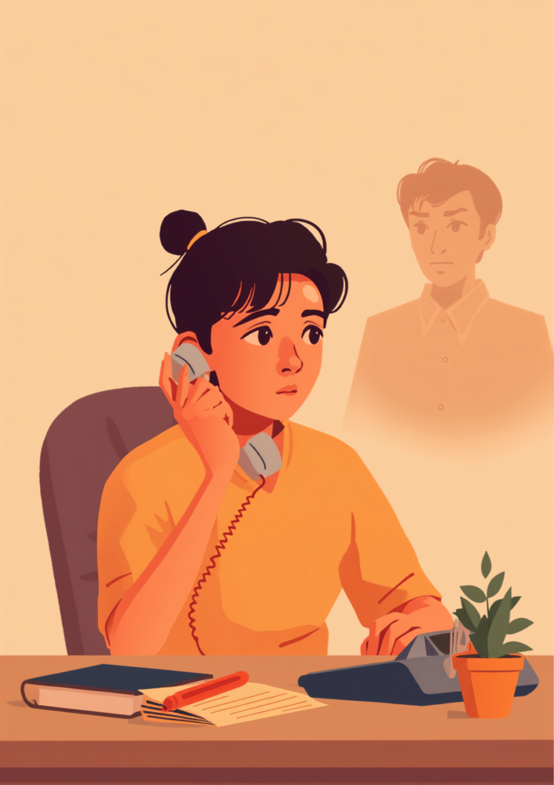
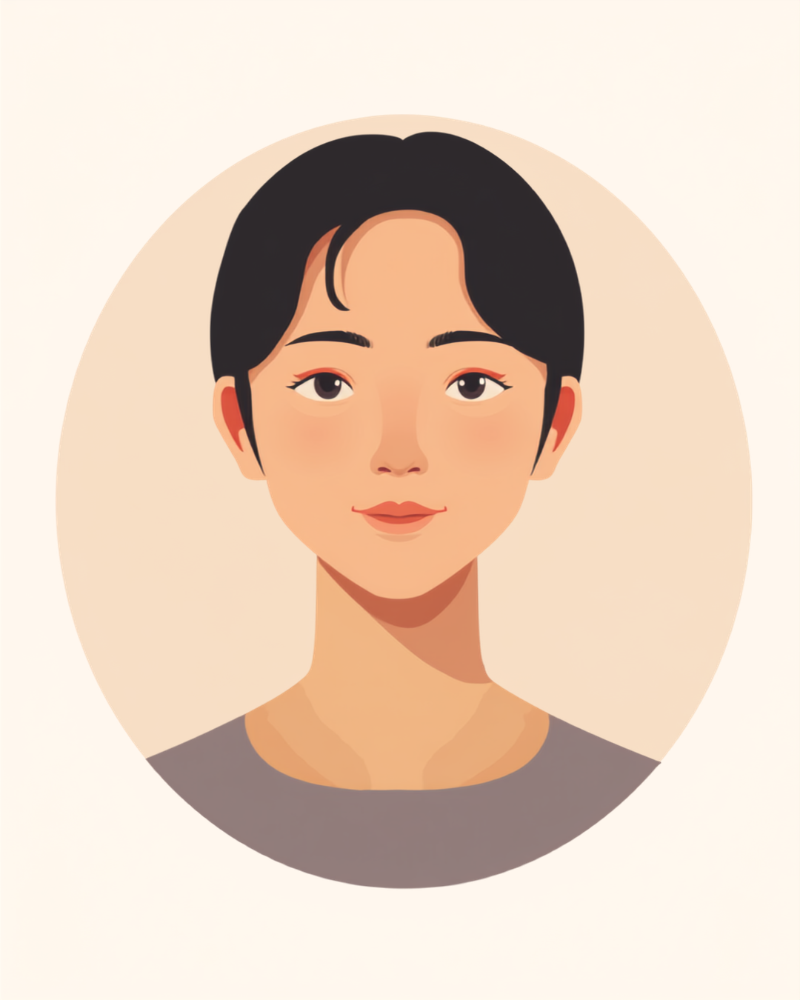

吃音は、言葉の出だしで詰まったり、同じ音を繰り返したり、言葉自体が出てこなくなったりする話し方の特性です。本人の努力不足や慣れの問題ではないとされていますが、電話対応のように「すぐに」「正確に」話すことが求められる場面では、周囲の理解を得にくく、しんどさを一人で抱え込みやすい傾向があります。この記事では、吃音のある方が仕事の中で感じやすい電話対応への恐怖と、職場への伝え方、使える配慮を当事者の声をもとに整理しました（2026年7月時点の情報です）。
PR



受話器を持った瞬間、名乗りの一言目が出てこなくなる
電話が鳴るたびに体がこわばる。急かされると余計に出てこなくなる仕組み
吃音には、同じ音を繰り返す「連発」、音を引き伸ばす「伸発」、言葉が出てこなくなる「難発」という現れ方があるとされています。電話は声だけがすべての情報になるぶん、症状が出やすい場面のひとつと言われています。ミミ
就労支援の現場で関わってきた中で、吃音のある方から繰り返し聞いてきた言葉があります。「電話が鳴った瞬間、心臓がバクバクする」というものです。吃音は幼少期から続いている方も、大人になってから強くなったと感じる方もいますが、共通しているのは「急いでいるときほど言葉が出てこなくなる」という感覚のようです。名乗りの第一声、社名の頭の一文字、そういった「決まった言葉を、決まったタイミングで、正確に言わなければいけない」場面が、電話対応には詰まっています。
厄介なのは、相手を待たせている感覚が本人の焦りを強め、焦れば焦るほど余計に言葉が出づらくなるという悪循環に陥りやすいことです。電話の向こうで「もしもし?」と繰り返されたり、受話器越しに「早く言ってよ」と急かされたりすると、その一言がきっかけで完全に固まってしまう、という経験をした方は少なくないようです。
!
吃音の現れ方や、どんな場面で症状が強くなるかには個人差があります。この記事で挙げる内容がそのまま当てはまるとは限らないため、気になる症状がある場合は自己判断せず、言語聴覚士や専門の相談機関に相談することをお勧めします。
「営業職なので、テレアポは避けて通れない仕事でした。ある日、電話口の相手に社名を名乗ろうとして詰まってしまって、向こうから『すみません、お忙しいですか？早く言ってもらえます?』って言われたんです。その瞬間、頭が真っ白になって、結局何も言えないまま電話を切られました。正直あのときのことは3年経った今でもたまに思い出します。」
40代・男性（吃音・営業職）
相談の一コマ

相談者
電話を取るのが本当に怖いんです。名乗ろうとしても最初の一音が出てこなくて、相手を待たせてると思うとますます焦って、余計に出てこなくなって。

ミミ
焦れば焦るほど出てこなくなる、というのはよく聞く感覚です。吃音は気合や慣れだけでどうにかなるものではないとされているので、まずはそこを自分を責める材料にしないでほしいです。
相談者
でも電話は仕事だから、避けられないですよね……。
ミミ
完全に避けるのは難しくても、名乗り方を工夫したり、一次対応をメールやチャットに変えてもらえないか相談したりする方法はあります。次の章で、具体的な伝え方を一緒に見ていきましょう。
「ゆっくりでいいよ」と言われても、意識すればするほど力が入る
吃音のある方への声かけとして「ゆっくり話していいよ」という言葉がよく使われます。善意からの言葉であることは間違いないのですが、実際には意識されること自体がプレッシャーになるという声もあります。周りが自分の話し方に注目していると感じるほど、力が入ってしまい、かえって言葉が出てこなくなる。そんな矛盾を抱えている方は少なくないようです。
i
吃音の症状は、緊張・焦り・注目されている感覚などによって強く出やすくなると言われることがありますが、体調や場面によって波があり、同じ人でも日によって出方が違うことがあります。
「販売の仕事をしていたとき、レジで『ありがとうございました』の『あ』がどうしても出なくて、お客さんの前で固まっちゃったことがあります。後ろに並んでる人もいるし、めちゃくちゃ焦りました。その場でお客さんに笑われたわけじゃないんですけど、笑われた気がして、しばらくレジ打つのが怖くなりました。半年くらいは出勤前にお腹が痛くなる日もありましたね。」
30代・女性（吃音・販売職）
症状の出方は、緊張しているときだけとは限りません。むしろ「言おうとする言葉が決まっている」場面のほうが出やすいという方もいます。雑談は意外と平気なのに、名前や決まった台詞になると詰まるという感覚は、吃音のある方にとってはよく知られたものですが、周囲にはなかなか理解されにくいようです。
職場にどう伝える？からかわれた経験との付き合い方
吃音のある方の中には、過去に話し方を真似されたり、笑われたりした経験を持つ方が少なくありません。そうした経験があると、職場で「困っている」と伝えること自体に強い抵抗を感じるようになるのも無理はないと思います。症状そのものより、過去に傷ついた経験のほうが、開示のハードルを上げているというケースもあるようです。
「新卒で入った会社のヘルプデスクで、電話が鳴るたびに胃が痛くなってました。詰まると『あれ、噛んだ?』みたいにいじられることもあって、悪気はないんだろうけど地味にしんどかったです。3ヶ月くらい我慢して、結局体調崩して上司に相談したら、意外とあっさり『じゃあ一次対応はチャットボットと僕でカバーするよ』って言ってもらえました。もっと早く言えばよかったな、と今は思います。」
20代・男性（吃音・IT/ヘルプデスク職）
具体的な場面に絞って伝えるという考え方
症状の名前や原因まで詳しく説明する必要はないとされています。業務に関わる具体的な場面だけに絞って伝える方法が、双方にとって負担が少ないと言われています。
- 「電話の第一声が出てきにくいことがあります」
- 「急かされるとかえって時間がかかってしまうので、少し待ってもらえると助かります」
- 「詰まっても言い換えなくて大丈夫なので、最後まで聞いてもらえると安心します」
- 「可能であれば、一次対応をメールやチャットにしてもらえると業務がスムーズです」
「詰まっても最後まで待ってもらえる」と分かっているだけで、話す前の緊張が和らいだという声をよく聞きます。伝えることは特別扱いを求めることではなく、お互いが働きやすくなるための準備だと思ってみてください。ミミ
誰に、どこまで伝えるかは本人が決めていいことです。まずは直属の上司や人事担当者など、信頼できる一人に業務に関わる範囲で共有し、そこからチームに必要な情報だけ広げてもらう、という進め方をとっている方もいるようです。無理に全員へ開示する必要はありません。
使える配慮と、一人で抱えないための相談先
身体障害者手帳という選択肢
吃音は、身体障害者手帳の音声機能、言語機能又はそしゃく機能の障害の区分に含まれる場合がありますが、対象となるには一定の基準を満たす必要があり、すべての吃音のある方が対象になるわけではないとされています。実際には手帳を取得せず、一般雇用のまま働いている方も多いようです。詳しくは主治医や自治体の障害福祉窓口に確認するのが確実です（2026年7月時点の情報です）。
相談できる窓口
- 言語聴覚士や吃音外来のある医療機関（症状の相談、話し方の工夫についての情報）
- 職場に選任されている産業医（50人以上の事業場に選任義務あり）
- ハローワークの障害者専門窓口、自治体の障害福祉窓口
- 就労移行支援事業所（職場との調整を含めた就労準備の相談）
- 吃音のある当事者団体・セルフヘルプグループ（同じ経験を持つ人との情報交換）
吃音の現れ方や、必要な配慮の内容には個人差があります。この記事の内容がそのまま当てはまるとは限らないため、実際の判断は専門家や支援者とよく相談しながら進めることをお勧めします（2026年7月時点の情報です）。
急かされて出てこなくなるのは、性格の問題でも慣れの問題でもありません。「待ってもらえる」と分かっているだけで、話しやすさは変わることがあります。
よくある質問
Q. 吃音があっても就職や転職はできますか？
吃音があることを理由に採用や転職の道が閉ざされるわけではないとされています。事務職やパソコン入力が中心の業務など、電話対応の比重が少ない職種を選ぶ方もいれば、電話対応がある職場でも配慮を得ながら働いている方もいます。向き不向きは症状の程度や本人の希望によって異なるため、就労移行支援機関やハローワークの専門窓口に相談しながら探す方法もあります。
Q. 電話対応が怖いとき、職場にどう伝えればいいですか？
症状のすべてを説明する必要はないとされています。「電話の第一声が出てきにくいことがある」「急かされるとかえって時間がかかる」など、業務に関わる具体的な場面に絞って伝える方法が助けになる場合があります。まずは信頼できる上司や人事担当者に相談してみることをお勧めします。
Q. 吃音でも障害者手帳は取れますか？
吃音は身体障害者手帳の「音声機能、言語機能又はそしゃく機能の障害」の区分に含まれる場合がありますが、対象となるには一定の基準を満たす必要があり、すべての吃音のある方が対象になるわけではないとされています。詳しくは主治医や自治体の障害福祉窓口にご確認ください（2026年7月時点の情報です）。
Q. 「ゆっくり話していいよ」と言われるのがかえってつらいときは？
気遣ってもらえること自体はありがたい一方で、意識されすぎるとかえって力が入ってしまうという声もあります。「急がなくて大丈夫」だけでなく、「詰まっても最後まで待つので、言い換えなくていい」など、具体的にどうしてほしいかを伝えておくと、お互いに楽になる場合があります。
Q. 吃音を職場で隠したまま働き続けるのはよくないことですか？
開示するかどうかは本人が判断することであり、隠すこと自体が誤りというわけではないとされています。ただし、業務に支障が出る場面がある場合は、症状そのものより「困る場面」に絞って伝えておくほうが、結果的に本人の負担が減るケースもあるようです。無理に開示を急ぐ必要はありません。
この5点を頭に置いておくだけで、少し気持ちが軽くなるかもしれません
PR


一人で抱え込む前に、今の気持ちを話してみませんか
「まだ迷っている」段階でも大丈夫です。mimemimeの無料相談は、今の状況の整理から一緒に始められます。
無料で話してみる
おのざる
mimemime代表。就労支援の現場経験をもとに、障がいのある方の働く不安に寄り添う記事を執筆。